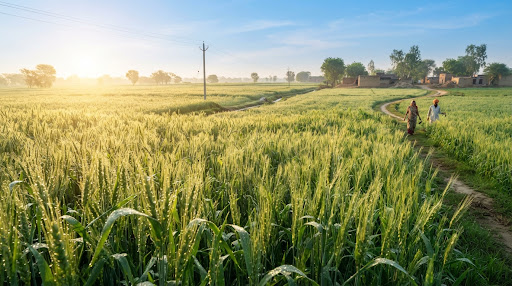
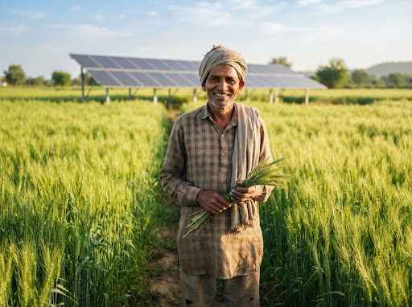
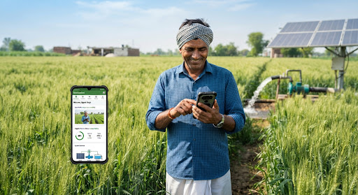
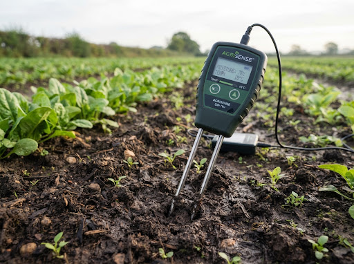
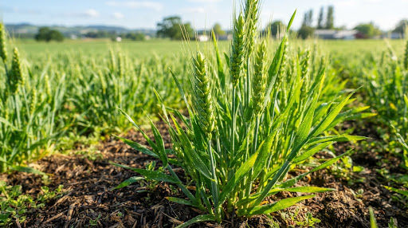

Let the sun pump.
Let the data
pour.
Know how much water your crop needs, calculated from your farm's weather, soil moisture and growth stage.
Small farms. Big uncertainty.
What India's small farmers face every season.

“We pump when electricity arrives or sun shines, guessing if the wheat drank too little or too much.”
The average Indian farm has shrunk to about 0.74 hectares, down from 1.08 ha five years earlier. Small plots leave no room to waste water or inputs.
India recorded extreme weather on 99% of days between January and September 2025, affecting at least 9.47 million hectares of cropland. Rain and heat are harder to plan around every year.
Groundwater supplies about 64% of India's irrigation, and 730 blocks (10.8%) are already over-exploited. Guessing how much to irrigate means wasted water and energy, or a stressed crop.
One-size-fits-all advice
A crop's thirst changes with its growth stage, the weather and the soil, yet most irrigation follows habit or a fixed schedule.
No data from the field
Most decisions are made by eye. Farmers rarely have measurements of their own soil moisture, humidity or crop stage to rely on.
From your field to your water number
Precision water estimation tailored for solar pump farmers

Set up your farm once
Register a farm with its location, field area, water source and power source. Your sensor units are assigned to that farm, so every reading and calculation belongs to the right field.
- check_circle Farm location and field area
- check_circle Water source and power source
- check_circle Sensor units linked to each farm
Sensors that listen to your soil
Each physical sensor unit sends its readings, and every farm keeps a history with the newest readings first. Soil moisture and air humidity feed directly into the water calculation.
- check_circle Soil moisture and air humidity
- check_circle Every unit tracked individually
- check_circle Newest-first reading history


Crop stage from a single photo
Send a photo of your crop and a MobileNetV3 model identifies its wheat growth stage among four classes, with about 93% validation accuracy. The stage sets the crop coefficient used in the water calculation.
- check_circle Wheat growth-stage detection
- check_circle Four growth-stage classes
- check_circle About 93% validation accuracy
Local weather, automatically
Your farm's location is used to fetch weather from Open-Meteo. Temperature, humidity, wind and precipitation conditions feed the evapotranspiration calculation.
- check_circle Weather by farm location
- check_circle Powered by Open-Meteo
- check_circle Used directly in the water calculation
Integrates field soil depletion index with crop evapotranspiration.
Water requirement, the FAO way
Instead of a fixed soil-moisture threshold, the platform calculates reference evapotranspiration (ET₀) from weather, applies a crop coefficient based on growth stage to get crop evapotranspiration (ETc), and combines it with soil moisture and field area to estimate how much water your crop needs.
- check_circle ET₀ from weather data
- check_circle Crop coefficient from growth stage
- check_circle Uses soil moisture and field area
Products
Hardware that listens to your soil and watches your crops.